david@dev:~$ whoami
David
Papp.
AI solution developer
Open to full-time work
Rotterdam, NL
Target rolesAI engineering, backend and data
AI solution developer
Target rolesAI engineering, backend and data
AI solution developer
Target rolesAI engineering, backend and data
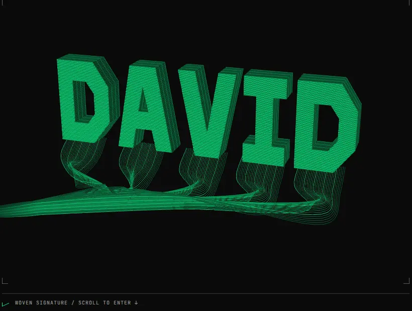
A company assistant that answers only from the text you give it, shows the exact sentence it used, and goes live only after a person approves it.
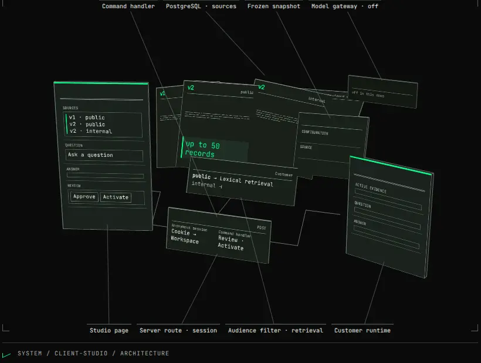
The server uses the anonymous session to find the workspace for this question.
What is the API batch limit?
Cookie → Workspace
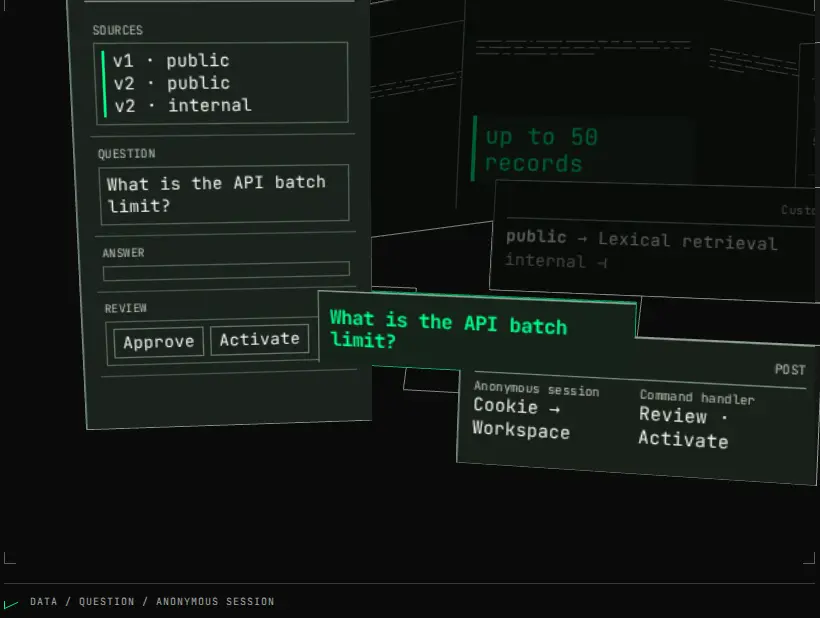
Lexical retrieval selects the permitted source in version 2. The answer repeats its exact excerpt.
“up to 50 records”
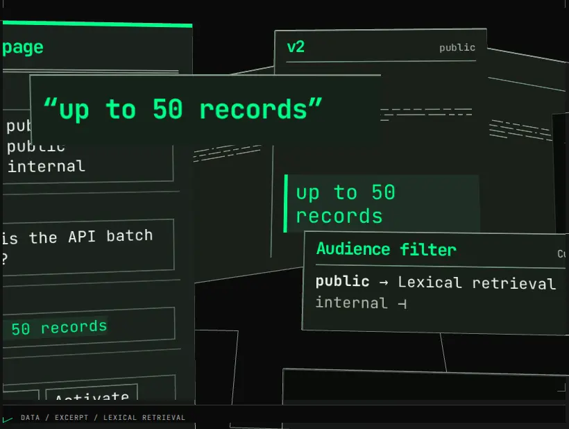
The server filters by audience before lexical retrieval sees the source text.
“up to 50 records”
Withheld
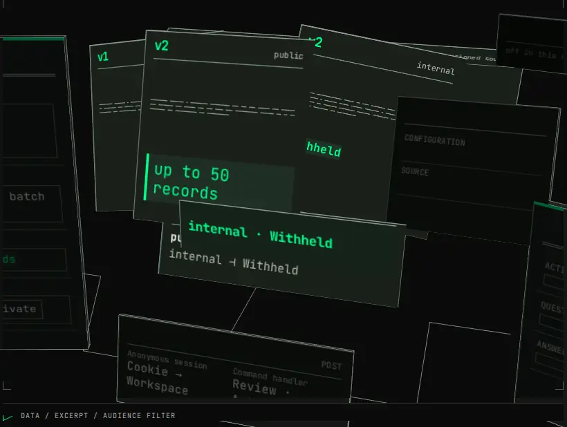
Approval captures the tested configuration and permitted sources. Activation copies that revision into the runtime snapshot.
Approved
v2 · public
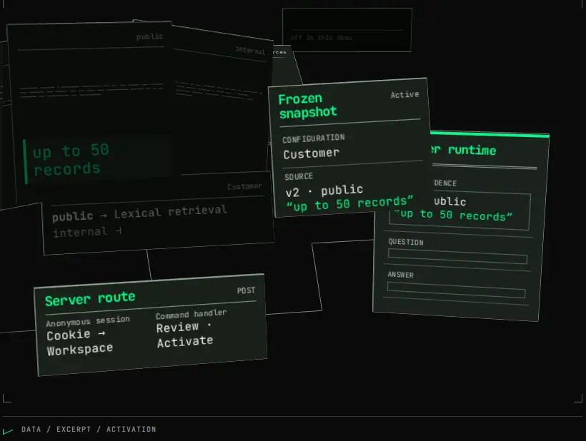
Writes are idempotent and revision-checked. A new write based on a stale revision returns 409.
409 · Revision conflict
v2 · public
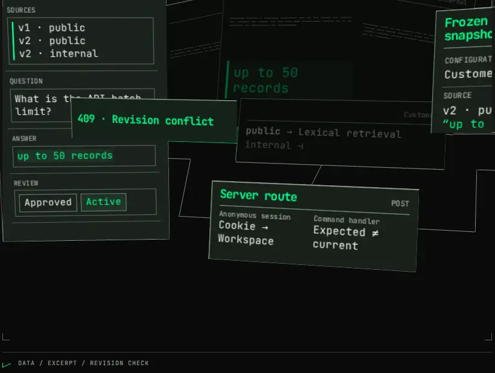
It follows a conversation transcript and puts the right reference card in front of you at the right moment, and every card names its source.
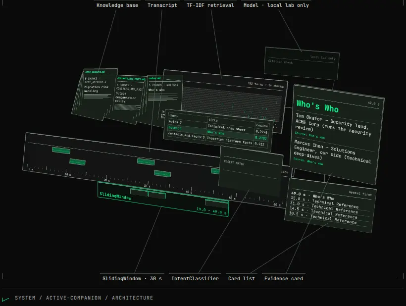
The fictional transcript supplies the speaker, text, start and end of each utterance.
How does your API integration work? Do you support webhooks?
REST over HTTPS with OAuth2, webhooks signed with HMAC.
| speaker | start (s) | end (s) | text |
|---|---|---|---|
| engineer | 6 | 10.5 | How does your API integration work? Do you support webhooks? |
| se | 10.7 | 14.5 | REST over HTTPS with OAuth2, webhooks signed with HMAC. |
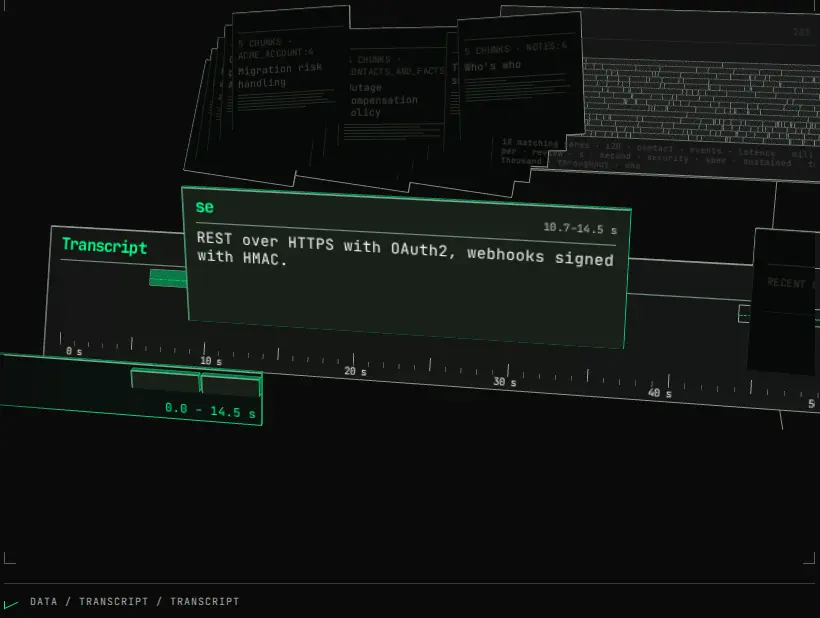
SlidingWindow keeps utterances whose end time falls on or after the 30-second cutoff.
19.0–49.0 s
10.5 s · engineer / 14.5 s · se
31.0 s / 35.0 s / 49.0 s
| speaker | start (s) | end (s) | text |
|---|---|---|---|
| engineer | 6 | 10.5 | How does your API integration work? Do you support webhooks? |
| se | 10.7 | 14.5 | REST over HTTPS with OAuth2, webhooks signed with HMAC. |
| engineer | 27 | 31 | What's the latency and throughput spec under load? |
| se | 31.2 | 35 | p50 is 120 milliseconds, sustained five thousand events per second. |
| engineer | 44 | 49 | Who is from your team should review our security questionnaire? Who is the technical contact? |
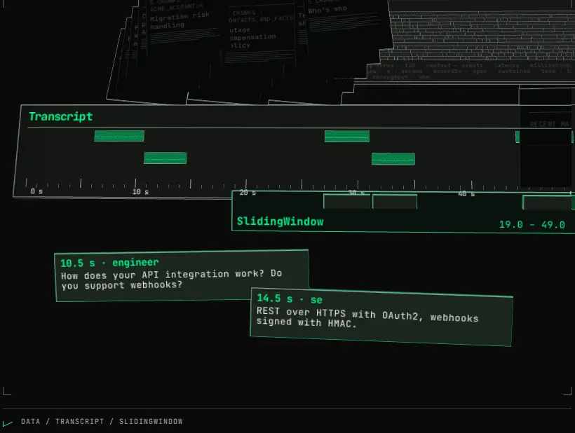
The heuristic classifier weights recent keyword matches and returns contact_lookup.
Who is from your team should review our security questionnaire? Who is the technical contact?
contact_lookup
Who is from your team should review our security questionnaire? Who is the technical contact?
contact_lookup
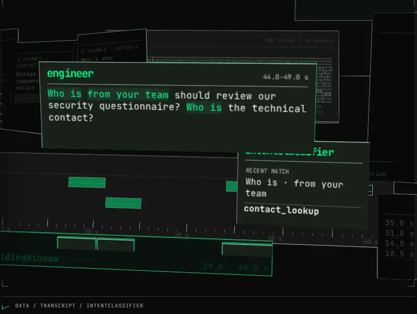
TF-IDF ranks the chunks. The card selects two matching snippets from “Who's who” and cites that title on each bullet.
notes:4 · Who's who
Who's Who · 2 sourced bullets
| chunk | source | cosine |
|---|---|---|
| notes:3 | Technical spec sheet | 0.2976 |
| notes:4 | Who's who | 0.2702 |
| contacts_and_facts:3 | Ingestion platform facts | 0.252 |
Tom Okafor — Security lead, ACME Corp (runs the security
review)
Source: Who's who
Marcus Chen — Solutions Engineer, our side (technical
deep-dives)
Source: Who's who
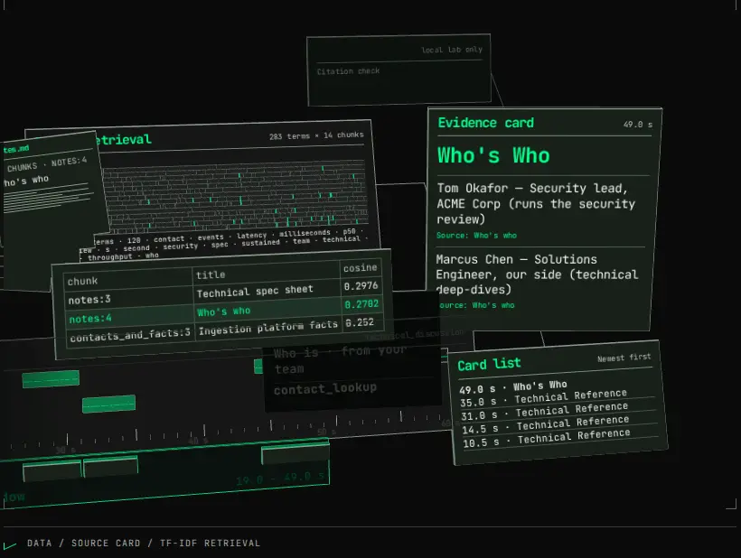
Only bullets citing a retrieved title can replace retrieval bullets. This local parser test shows a missing citation.
claim without cite
Dropped · retrieval card retained
Local parser test · claim without cite → Dropped
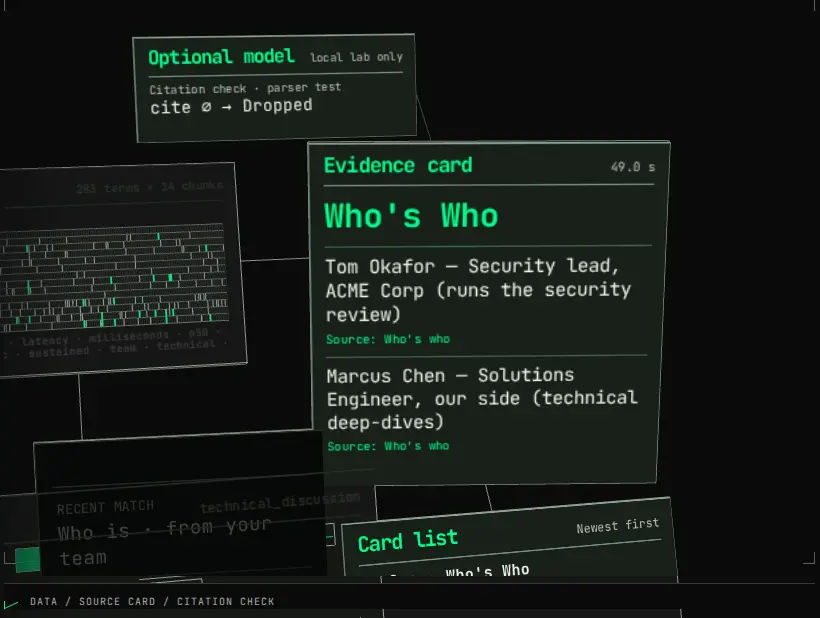
It shows why “just try again” can book the same job twice, and the fix that prevents it.
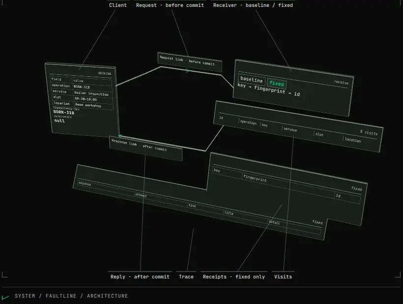
The fixed receiver commits VIS-742 and its keyed payload fingerprint together in the engine’s atomic storage model.
POST /visits · attempt 1
Committed · VIS-742
| id | operation | key | service | slot | location |
|---|---|---|---|---|---|
| VIS-742 | WORK-318 | WORK-318 | Boiler inspection | 09:30–10:00 | Demo workshop |
| key | fingerprint | id |
|---|---|---|
| WORK-318 | ["WORK-318","Boiler inspection","09:30–10:00","Demo workshop"] | VIS-742 |
| sequence | attempt | kind | title | detail |
|---|---|---|---|---|
| 1 | 1 | request | POST /visits · attempt 1 | Idempotency-Key: WORK-318 |
| 2 | 1 | commit | Committed · VIS-742 | Visit and idempotency receipt committed atomically in the model. |
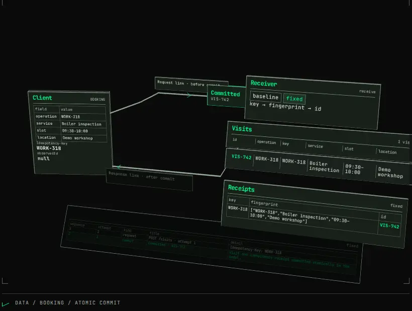
The reply drops after commit. The client times out with no observed visit ID.
Committed · VIS-742
Response lost · after commit
| id | operation | key | service | slot | location |
|---|---|---|---|---|---|
| VIS-742 | WORK-318 | WORK-318 | Boiler inspection | 09:30–10:00 | Demo workshop |
| key | fingerprint | id |
|---|---|---|
| WORK-318 | ["WORK-318","Boiler inspection","09:30–10:00","Demo workshop"] | VIS-742 |
| sequence | attempt | kind | title | detail |
|---|---|---|---|---|
| 1 | 1 | request | POST /visits · attempt 1 | Idempotency-Key: WORK-318 |
| 2 | 1 | commit | Committed · VIS-742 | Visit and idempotency receipt committed atomically in the model. |
| 3 | 1 | drop | Response lost · after commit | The visit exists. The client times out and cannot tell whether it committed. |
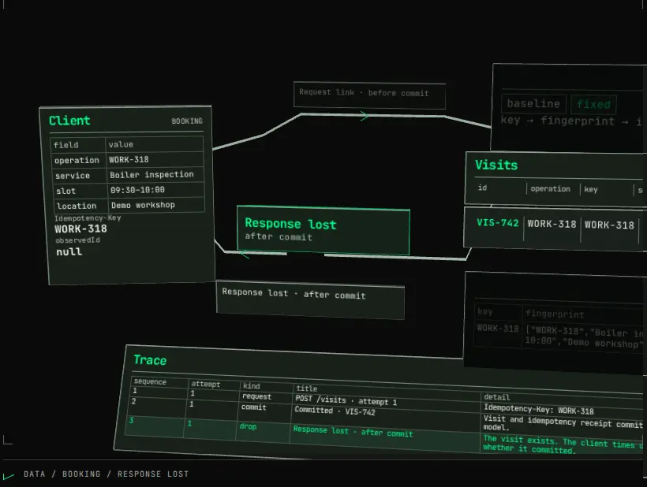
In the separate baseline run, the same operation commits VIS-743 after VIS-742.
Committed · VIS-743
201 received · VIS-743
| id | operation | key | service | slot | location |
|---|---|---|---|---|---|
| VIS-742 | WORK-318 | WORK-318 | Boiler inspection | 09:30–10:00 | Demo workshop |
| VIS-743 | WORK-318 | WORK-318 | Boiler inspection | 09:30–10:00 | Demo workshop |
| sequence | attempt | kind | title | detail |
|---|---|---|---|---|
| 1 | 1 | request | POST /visits · attempt 1 | Idempotency-Key: WORK-318 |
| 2 | 1 | commit | Committed · VIS-742 | Receiver creates a visit. It does not remember the operation key. |
| 3 | 1 | drop | Response lost · after commit | The visit exists. The client times out and cannot tell whether it committed. |
| 4 | 2 | request | POST /visits · attempt 2 | Idempotency-Key: WORK-318 |
| 5 | 2 | commit | Committed · VIS-743 | Receiver creates a visit. It does not remember the operation key. |
| 6 | 2 | response | 201 received · VIS-743 | Client can now confirm this visit against receiver state. |
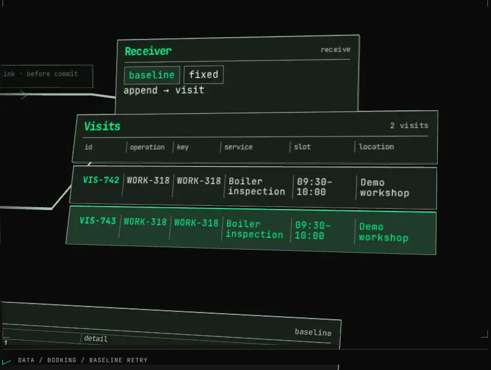
The fixed receiver matches the key and payload fingerprint and returns VIS-742 with 200.
Replay stored result · VIS-742
200 received · VIS-742
| id | operation | key | service | slot | location |
|---|---|---|---|---|---|
| VIS-742 | WORK-318 | WORK-318 | Boiler inspection | 09:30–10:00 | Demo workshop |
| key | fingerprint | id |
|---|---|---|
| WORK-318 | ["WORK-318","Boiler inspection","09:30–10:00","Demo workshop"] | VIS-742 |
| sequence | attempt | kind | title | detail |
|---|---|---|---|---|
| 1 | 1 | request | POST /visits · attempt 1 | Idempotency-Key: WORK-318 |
| 2 | 1 | commit | Committed · VIS-742 | Visit and idempotency receipt committed atomically in the model. |
| 3 | 1 | drop | Response lost · after commit | The visit exists. The client times out and cannot tell whether it committed. |
| 4 | 2 | request | POST /visits · attempt 2 | Idempotency-Key: WORK-318 |
| 5 | 2 | replay | Replay stored result · VIS-742 | Same key + same payload. Return the original visit without another effect. |
| 6 | 2 | response | 200 received · VIS-742 | Client can now confirm this visit against receiver state. |
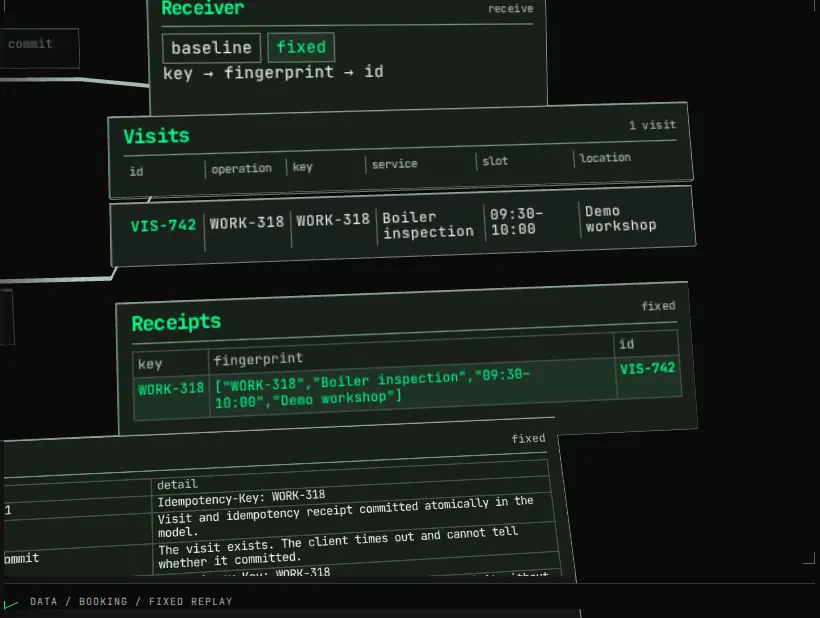
The fingerprint mismatch returns 409 and preserves the original visit.
POST /visits · attempt 3
409 · Key reused with a different payload
| id | operation | key | service | slot | location |
|---|---|---|---|---|---|
| VIS-742 | WORK-318 | WORK-318 | Boiler inspection | 09:30–10:00 | Demo workshop |
| key | fingerprint | id |
|---|---|---|
| WORK-318 | ["WORK-318","Boiler inspection","09:30–10:00","Demo workshop"] | VIS-742 |
| sequence | attempt | kind | title | detail |
|---|---|---|---|---|
| 1 | 1 | request | POST /visits · attempt 1 | Idempotency-Key: WORK-318 |
| 2 | 1 | commit | Committed · VIS-742 | Visit and idempotency receipt committed atomically in the model. |
| 3 | 1 | drop | Response lost · after commit | The visit exists. The client times out and cannot tell whether it committed. |
| 4 | 2 | request | POST /visits · attempt 2 | Idempotency-Key: WORK-318 |
| 5 | 2 | replay | Replay stored result · VIS-742 | Same key + same payload. Return the original visit without another effect. |
| 6 | 2 | response | 200 received · VIS-742 | Client can now confirm this visit against receiver state. |
| 7 | 3 | request | POST /visits · attempt 3 | Idempotency-Key: WORK-318 |
| 8 | 3 | conflict | 409 · Key reused with a different payload | Receiver rejects the mutation. No extra visit is created. |
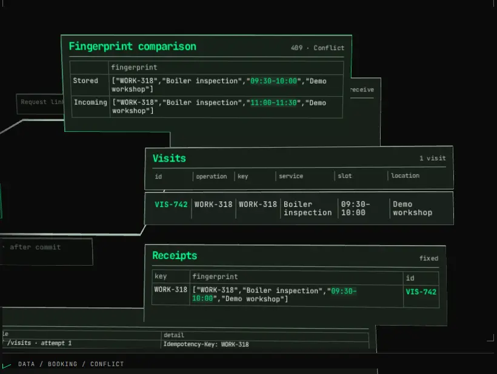
A quoted answer, a source card and a booking receipt.
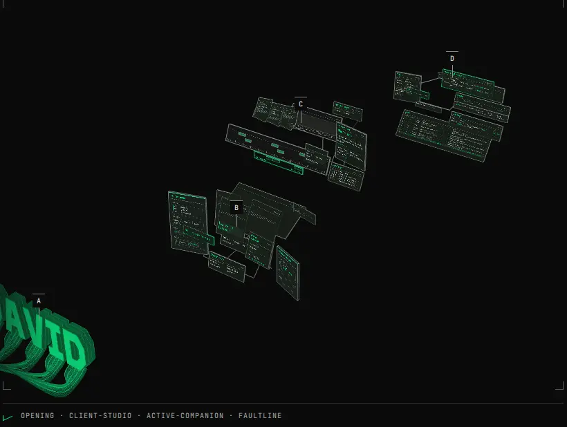
REV c4a72ef · 17 public repos